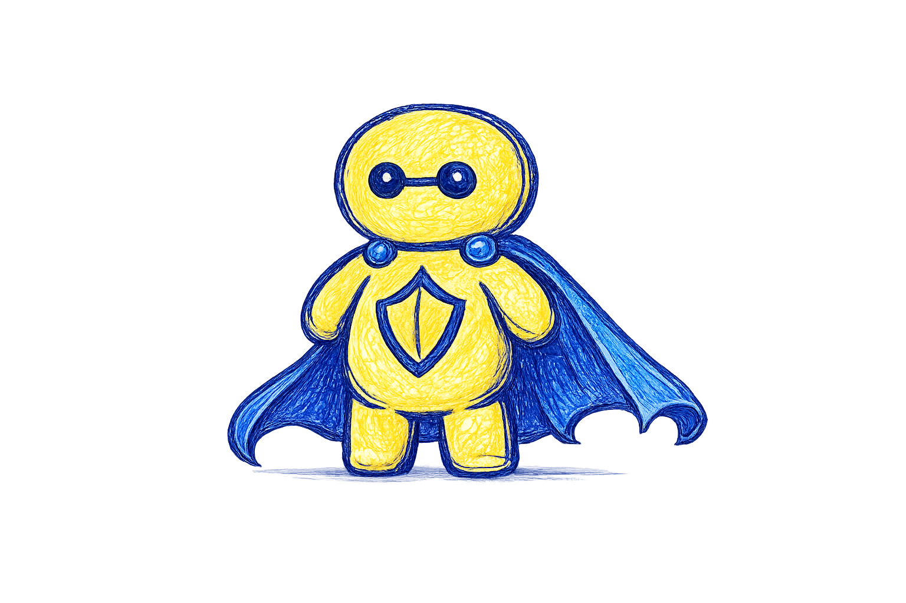

About BantayBizz
Smart cybersecurity made for small businesses.
BantayBizz protects Filipino entrepreneurs from scams, spyware, suspicious transactions, and digital payment fraud through a simple, friendly, and proactive mobile security app.

Our Story
Built by Cybertech for everyday business owners.
Many small businesses rely on mobile wallets and online transactions, but most do not have access to affordable and easy cybersecurity tools. BantayBizz was created to make protection simple, friendly, and useful for people who are not tech experts.
Instead of complicated systems, BantayBizz gives real-time alerts, payment protection, fraud tips, transaction checks, and a Certified Secure badge that helps build customer trust.
Why BantayBizz?
Protection that feels simple, not stressful.
Reliable Protection
Detects scams, spyware, phishing attempts, and risky activities before they cause damage.
Safer Payments
Helps protect GCash, Maya, QR payments, and other digital transactions used daily.
Customer Trust
Uses a Certified Secure badge so customers feel safer when buying from your business.
Target Users